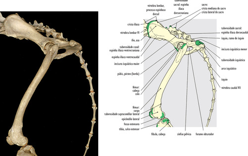
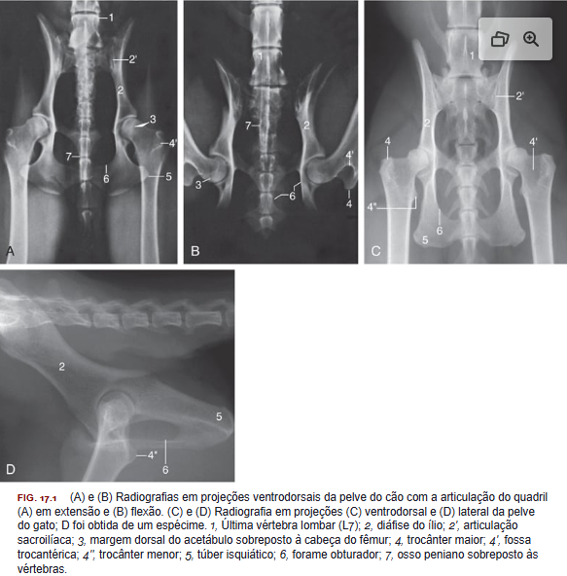
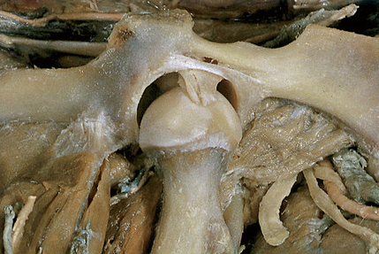

Articulação dos Membros Pélvicos
Articulação Coxofemoral (Garupa, quadril e coxa)
A posição habitual da garupa varia conforme a raça, porém, os principais pontos de referência do esqueleto são sempre palpáveis, e revelam o pequeno ângulo formado entre íleo e a coluna vertebral.

Fotografia e desenho representativo das regiões pélvica e coxa. As representações coloridas no desenho a direita correspondem às principais saliências ósseas palpáveis. Fonte: Done, S. H., Goody, P. C., Evans, S. A., & Stickland, N. C. (2010). Atlas colorido de anatomia veterinária do cão e gato (2ª ed.). GEN Guanabara Koogan.
A cabeça do fêmur é um hemisfério quase que perfeito, interrompido apenas pela pequena fóvea central de inserção do ligamento intracapsular (da cabeça do fêmur), essa parte do osso se acomoda no fundo da cavidade acetabular. Em condições normais o ligamento intracapsular impede movimentos que ameacem a estabilidade do quadril, em conjunto, a capsula articular também mantém a cabeça do fêmur dentro do seu encaixe acetabular e previne hiperextensão e hiperflexão.
NOTE: Em animais com displasia articular, o ligamento pode ser hipertrofiado, limitando seu posicionamento, movimentações e sua estabilidade da garupa.
O encaixe da cabeça do fêmur no acetábulo pode ser visível em radiografias ventrodorsal da pelve, por meio da medida do ângulo de Norberg (a linha que conecta o centro das cabeças do fêmur e a linha que une a cabeça do fêmur cranial da margem acetabular relacionada)
Você Sabia ¿
Raças grandes e gigantes tem uma predisposição genética e estrutural a serem diagnosticados com displasia coxofemoral, no qual é caracterizada pela alteração do desenvolvimento do colo femoral, cabeça do fêmur e acetábulo. Mas claro, para aqueles que não sofrem da condição, ainda existem fatores que contribuem para a doença como: baixa atividade física, distúrbios nutricionais (obesidade), solo inapropriado.
A anatomia radiológica é muito importante para o diagnóstico de duas doenças que comumente acometem a articulação: a luxação e a displasia. A relação entre a margem do acetábulo e a cabeça do fêmur sobreposta é relevante na determinação da integridade da articulação.

Fonte: Done, S. H., Goody, P. C., Evans, S. A., & Stickland, N. C. (2010). Atlas colorido de anatomia veterinária do cão e gato (2ª ed.). GEN Guanabara Koogan.
E por isso o estudo da artrologia se torna tão importante ao relacionarmos com os exames de imagem.
Você Sabia ¿
Diferente da displasia, a luxação do fêmur (coxofemoral) é causado por traumas. A lesão é relativamente comum e a cabeça do fêmur tende a ser deslocada em sentido dorsocranialmente. O ligamento da cabeça do fêmur é bastante suscetível á ruptura ou avulsão na luxação completa.

Fonte: Done, S. H., Goody, P. C., Evans, S. A., & Stickland, N. C. (2010). Atlas colorido de anatomia veterinária do cão e gato (2ª ed.). GEN Guanabara Koogan.
Articulação Femorotibiopatelar (articulação do joelho)
A palpação da articulação do joelho revela as seguintes características palpáveis: a patela, as cristas da tróclea e as superfícies externas dos côndilos do fêmur, os ossos sesamoides na orem do m. gastrocnêmio, a cabeça da fíbula, a margem do côndilo lateral á fíbula e a face medial da tíbia.